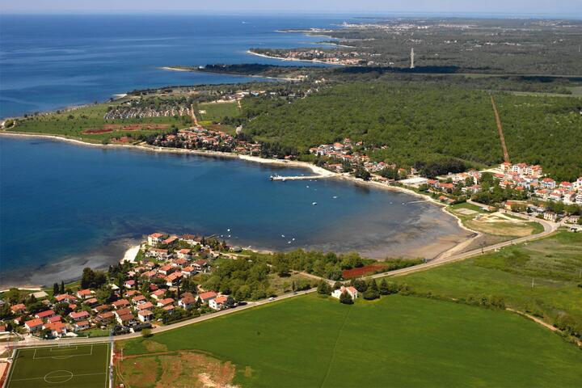
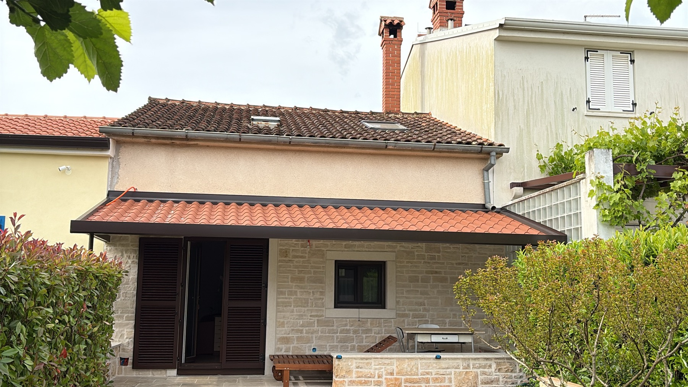
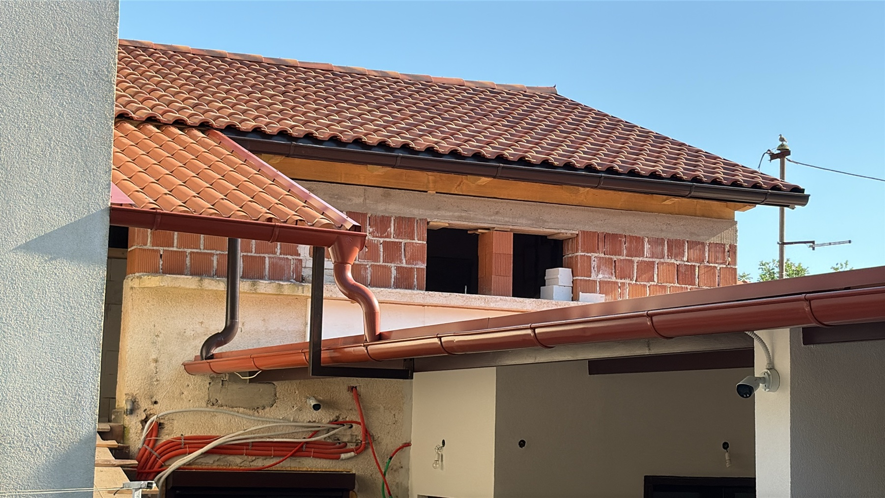
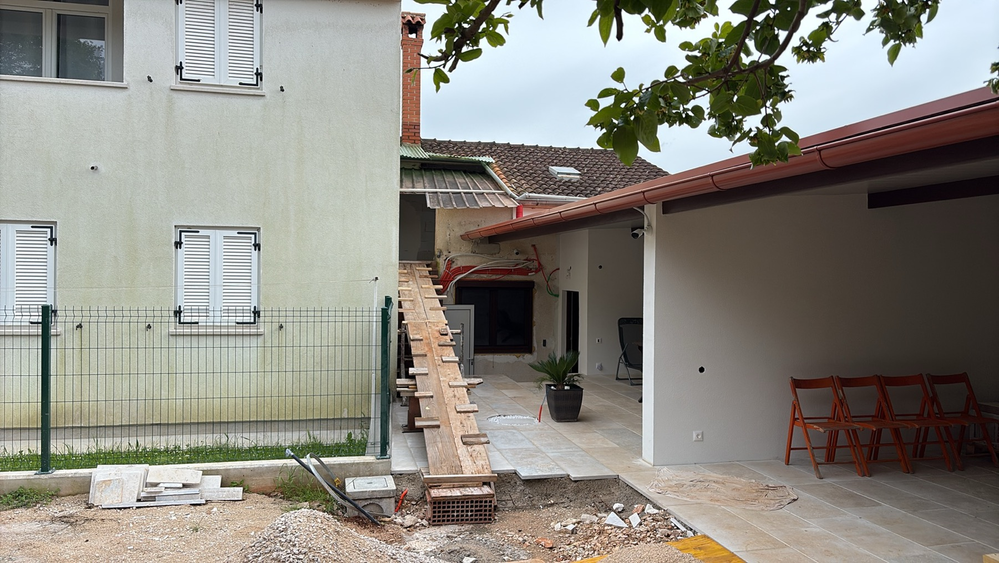

200 m od morja • Brezplačno parkiranje • Mirna lokacija
Apartmaji in parkiranje plovil ob morju.
Karigador je mirno obmorsko naselje v Istri, idealno za družinske počitnice, kolesarjenje, ribolov in navtični turizem z vrhunsko kulinariko.

Opis apartmaja.

Opis apartmaja.

Varovano nadkrito parkirno mesto 200 m od morja.
